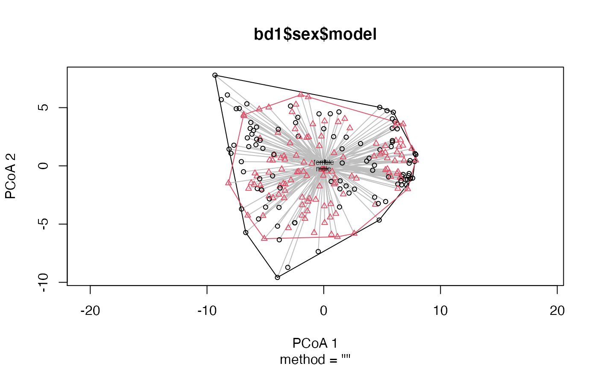
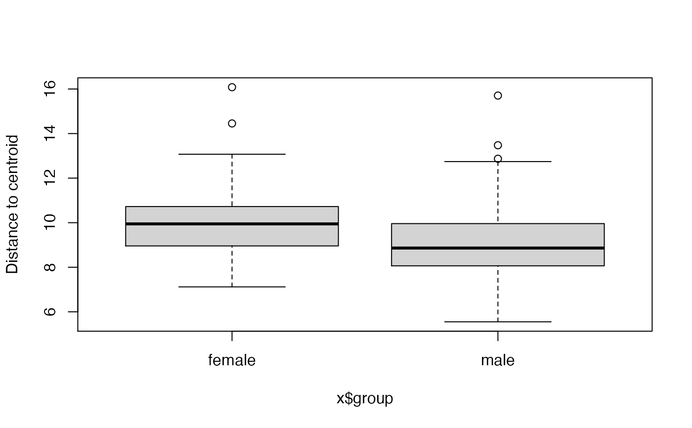

Takes the output of dist_calc function. Or use with the result of the permanova function to ensure the results correspond to exactly the same input data. Runs betadisper for all categorical variables in variables argument. See help('betadisper', package = 'vegan').
dist_bdisp( data, variables, method = c("centroid", "median")[[1]], complete_cases = TRUE, verbose = TRUE )
| data | ps_extra output from dist_calc |
|---|---|
| variables | list of variables to use as group |
| method | centroid or median |
| complete_cases | drop samples with NAs in any of the variables listed |
| verbose | sends messages about progress if true |
ps_extra list containing betadisper results
#>#>#>data("dietswap", package = "microbiome") # add some missings to demonstrate automated removal sample_data(dietswap)$sex[3:6] <- NA # create a numeric variable to show it will be skipped with a warning dietswap <- ps_mutate(dietswap, timepoint = as.numeric(timepoint)) # straight to the betadisp bd1 <- dietswap %>% tax_agg("Genus") %>% dist_calc("aitchison") %>% dist_bdisp(variables = c("sex", "bmi_group", "timepoint")) %>% bdisp_get()#>#> Warning: Variable timepoint is skipped as it cannot be used for grouping (class = numeric)bd1$sex#> $model #> #> Homogeneity of multivariate dispersions #> #> Call: vegan::betadisper(d = distMat, group = metadata[[V]], type = #> method) #> #> No. of Positive Eigenvalues: 123 #> No. of Negative Eigenvalues: 0 #> #> Average distance to centroid: #> female male #> 10.022 9.059 #> #> Eigenvalues for PCoA axes: #> (Showing 8 of 123 eigenvalues) #> PCoA1 PCoA2 PCoA3 PCoA4 PCoA5 PCoA6 PCoA7 PCoA8 #> 5106.7 2075.2 1360.1 1281.4 1061.7 890.1 665.4 567.5 #> #> $anova #> Analysis of Variance Table #> #> Response: Distances #> Df Sum Sq Mean Sq F value Pr(>F) #> Groups 1 50.14 50.144 20.976 7.853e-06 *** #> Residuals 216 516.35 2.391 #> --- #> Signif. codes: 0 ‘***’ 0.001 ‘**’ 0.01 ‘*’ 0.05 ‘.’ 0.1 ‘ ’ 1 #> #> $tukeyHSD #> Tukey multiple comparisons of means #> 95% family-wise confidence level #> #> Fit: aov(formula = distances ~ group, data = df) #> #> $group #> diff lwr upr p adj #> male-female -0.9632687 -1.377813 -0.5487242 7.9e-06 #> #># compute distance and use for both permanova and dist_bdisp testDist <- dietswap %>% tax_agg("Genus") %>% dist_calc("bray") PERM <- testDist %>% dist_permanova( variables = c("sex", "bmi_group"), n_processes = 1, n_perms = 99 )#>#>#>#> List of 5 #> $ ps :Formal class 'phyloseq' [package "phyloseq"] with 5 slots #> $ dist : 'dist' num [1:23653] 0.764 0.731 0.728 0.664 0.744 ... #> ..- attr(*, "Labels")= chr [1:218] "Sample-1" "Sample-2" "Sample-7" "Sample-8" ... #> ..- attr(*, "Size")= int 218 #> ..- attr(*, "call")= language as.dist.default(m = as.matrix(distMat)[keepers, keepers]) #> ..- attr(*, "Diag")= logi FALSE #> ..- attr(*, "Upper")= logi FALSE #> $ ord : NULL #> $ info : 'ps_extra_info' Named chr [1:7] "Genus" NA NA "bray" ... #> ..- attr(*, "names")= chr [1:7] "tax_agg" "tax_transform" "tax_scale" "distMethod" ... #> $ permanova:Classes ‘anova.cca’, ‘anova’ and 'data.frame': 4 obs. of 5 variables: #> ..- attr(*, "heading")= chr [1:2] "Permutation test for adonis under reduced model\nMarginal effects of terms\nPermutation: free\nNumber of permutations: 99\n" "vegan::adonis2(formula = formula, data = metadata, permutations = n_perms, by = by, parallel = parall)" #> ..- attr(*, "F.perm")= num [1:99, 1:2] 1.406 0.96 0.407 0.63 0.597 ... #> ..- attr(*, "Random.seed")= int [1:626] 10403 591 -2082966440 732504227 -1457289587 1800313928 -1573595936 -1663538722 131684683 2051132467 ... #> ..- attr(*, "control")=List of 12 #> .. ..- attr(*, "class")= chr "how" #> - attr(*, "class")= chr [1:2] "ps_extra" "list"#> ps_extra object - a list with phyloseq and extras: #> #> phyloseq-class experiment-level object #> otu_table() OTU Table: [ 130 taxa and 218 samples ] #> sample_data() Sample Data: [ 218 samples by 8 sample variables ] #> tax_table() Taxonomy Table: [ 130 taxa by 3 taxonomic ranks ] #> #> ps_extra info: #> tax_agg = Genus tax_transform = NA #> #> bray distance matrix of size 218 #> 0.7639533 0.731024 0.7283254 0.6637252 0.7437293 ... #> #> permanova: #> Permutation test for adonis under reduced model #> Marginal effects of terms #> Permutation: free #> Number of permutations: 99 #> #> vegan::adonis2(formula = formula, data = metadata, permutations = n_perms, by = by, parallel = parall) #> Df SumOfSqs R2 F Pr(>F) #> sex 1 0.361 0.00933 2.1539 0.06 . #> bmi_group 2 2.377 0.06143 7.0888 0.01 ** #> Residual 214 35.874 0.92720 #> Total 217 38.691 1.00000 #> --- #> Signif. codes: 0 ‘***’ 0.001 ‘**’ 0.01 ‘*’ 0.05 ‘.’ 0.1 ‘ ’ 1 #> #> #> betadisper: #> sex bmi_group